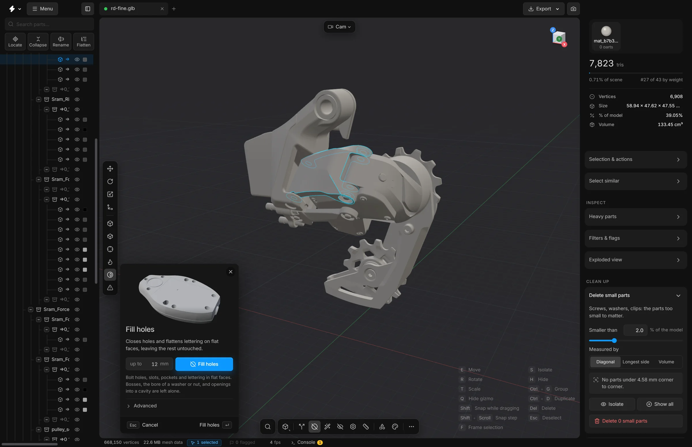

Fill holes
Close bolt holes, slots, pockets and lettering in flat faces. Each closed hole removes the triangles of its walls.
A plate with forty bolt holes carries forty small cylinders of triangles that nobody notices from a distance. Fill holes closes holes in flat faces and leaves the rest of each part exactly as it was. The part keeps its outline and loses the triangles inside the holes.
With the limit at 12 mm it closes bolt holes, slots and pockets up to that size, and leaves bosses and the bore of a washer or a nut alone.


What it closes, and what it leaves
- Closed: holes that go right through, holes with a floor, counterbores, slots, pockets and engraved lettering in flat faces.
- Left alone: a boss or a pin that stands up from a face.
- Left alone: an opening that is what the part is, such as the bore of a washer, a nut or a bushing.
- Left alone: an opening that leads into a hollow space or out through a curved surface.
- Left alone: holes in curved surfaces. The tool works on flat faces only.
- Left alone: instanced parts, which the file stores as repeats of one shared shape. The result line says how many it passed over.
Steps
- Select the parts to work on. With nothing selected, it works on every visible part.
- Press P, or click Fill holes on the bottom toolbar. The panel opens at the bottom left of the viewport.
- Set up to to the largest hole you want closed, in millimetres, measured across the hole’s widest point. It starts at 12.
- Press Fill holes, or Enter.
- The holes close. The app reports how many, and the saving shows beside the triangle count.
What the advanced options mean
Open Advanced in the panel.
- Through holes
- Holes that go right through: an opening on both sides.
- Blind holes and pockets
- Holes and pockets with a floor: an opening on one side only.
- Open holes
- Openings with nothing behind them: a missing patch in a flat face.
- Raised lettering and logos
- Lettering and marks that stand proud of a flat face are flattened into it. Bosses, pins and ribs are taller than the limit and stay.
- Raised, up to
- A raised detail is flattened only if it stands no higher than this above its face. Embossed type is usually 0.1 to 0.5 mm high.
- Keep openings that shape the part
- On: an opening that takes up much of its face and of the part is kept, such as the bore of a washer or a window in a frame. Off: only the size limit decides.
- Smallest hole
- Holes narrower than this are left alone.
- Depth limit
- How far the inside of a hole may reach, as a multiple of the size limit. Lower it to leave deep bores alone.
- Flatness
- How far apart the directions of two triangles may be and still count as one flat face. Raise it for meshes whose flat faces are slightly bent.
- Reset to defaults
- Puts every option back.
Undo
A whole run is one undo step. Press CtrlZ and every hole is back.
Tips
- Start with a small limit, look at the result, and raise it. A limit that is too high closes openings you wanted, such as a cable cut-out.
- The filled result is what gets saved and exported.
- A hole that was formed by pushing through the sheet, with a collar on the other side, is closed, and its collar stays as a small stub.
Smart optimise can run this command as one of its steps, with the settings and the size limit of this panel.